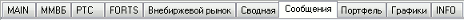

Экранные вкладки
меню Окна / Показать вкладки
меню Окна / Убрать вкладки
Для оптимизации рабочего пространства системы QUIK
предусмотрена возможность группировки окон с помощью экранных вкладок. Вкладка представляет
собой ярлык на специальной панели вкладок. Нажатие левой кнопкой мыши на
ярлык вкладки делает видимой связанную с ним группу
окон. При этом окна, относящиеся к другим вкладкам, становятся
невидимыми.

- Часть окон программы могут
быть не включены пользователем в какую-либо группу. Такие окна видны на любой вкладке.
Для изменения порядка вкладок воспользуйтесь режимом «drag-and-drop»: перемещайте ярлык вкладки, удерживая нажатой левую кнопку мыши.
Доступные функции
- «Ctrl» + «G» - настроить Общие фильтры для всех таблиц на вкладке.
- «Alt» + «1» .. «Alt» + «9» - переключиться на вкладку с соответствующим порядковым номером.
- Двойное нажатие левой кнопки мыши на ярлыке вкладки – изменение названия вкладки.
Функции, доступные из контекстного меню вкладки
Функции контекстного меню доступны при нажатии правой кнопкой мыши на ярлык вкладки:
- «Добавить» – создание новой вкладки. Новая вкладка с названием «Вкладка <N>» добавляется в конец списка существующих вкладок. «N» – порядковый номер вкладки.
- «Переименовать» – изменение названия выделенной вкладки.
- «Удалить» – удаление выделенной вкладки. Все окна, расположенные на удаляемой вкладке, закрываются. Последнюю существующую вкладку удалить нельзя.
- Если включена настройка «Запрашивать подтверждение при перемещении и удалении объектов с помощью drag-and-drop», то у пользователя запрашивается подтверждение на удаление данной вкладки.
- «Показать сверху» – расположение панели вкладок сверху или снизу относительно рабочего пространства программы. Если вкладки располагаются сверху, то данный пункт контекстного меню помечается символом «v».
- «В один ряд» – расположение панели вкладок в один ряд или несколькими рядами в случае, когда вкладки не помещаются в одну строку. Если вкладки располагаются в один ряд, то используются кнопки прокрутки видимых вкладок вправо и влево, и данный пункт контекстного меню помечается символом «v».
- «Закрепить окна» – зафиксировать размер и расположение окон на выделенной вкладке. Не действует на окна, видимые на всех вкладках.
- «Освободить окна» – отключить фиксацию размера и расположения окон на выделенной вкладке. Не действует на окна, видимые на всех вкладках.
- «Убрать заголовок» – отключить отображение строки с заголовком для всех окон на выделенной вкладке. Не действует на окна, видимые на всех вкладках.
- «Показать заголовок» – включить отображение строки с заголовком для всех окон на выделенной вкладке. Не действует на окна, видимые на всех вкладках.
- «Список окон» – список окон, отображаемых на выделенной вкладке, в алфавитном порядке. Выбор определенного значения из списка активирует соответствующее окно.
- «Сохранить вкладку в файл» – сохранить выделенную вкладку и расположенные на ней окна в указанный файл. Файл имеет расширение .TAB и содержит информацию об одной сохраненной вкладке (включая фильтр по коду клиента, заданный для данной вкладки) и об окнах, которые в момент сохранения файла были расположены на данной вкладке. Окна, видимые на всех вкладках, в файл не сохраняются.
- «Загрузить вкладку из файла» – при загрузке файла сохраненная в нем вкладка с окнами добавляется в список существующих вкладок. Если в момент загрузки вкладки из файла в терминале существует окно или вкладка с совпадающим наименованием, то она переименовывается в соответствии с правилами переименования совпадающих названий в терминале (например, вторая «Вкладка1» переименовывается во «Вкладка1 #2»).